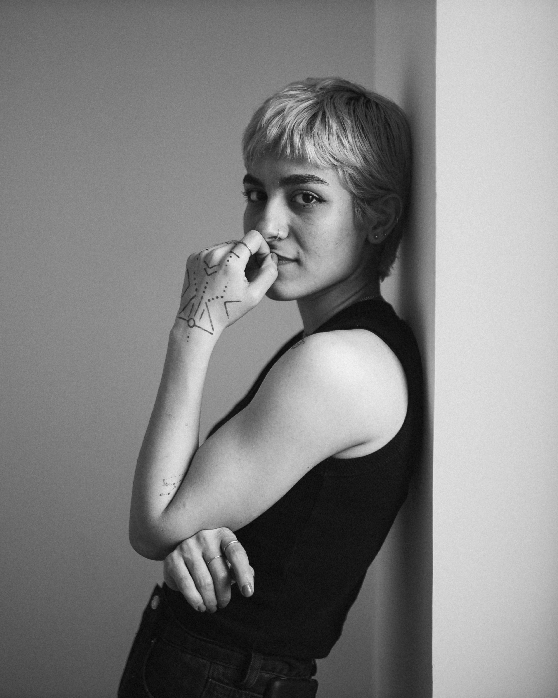
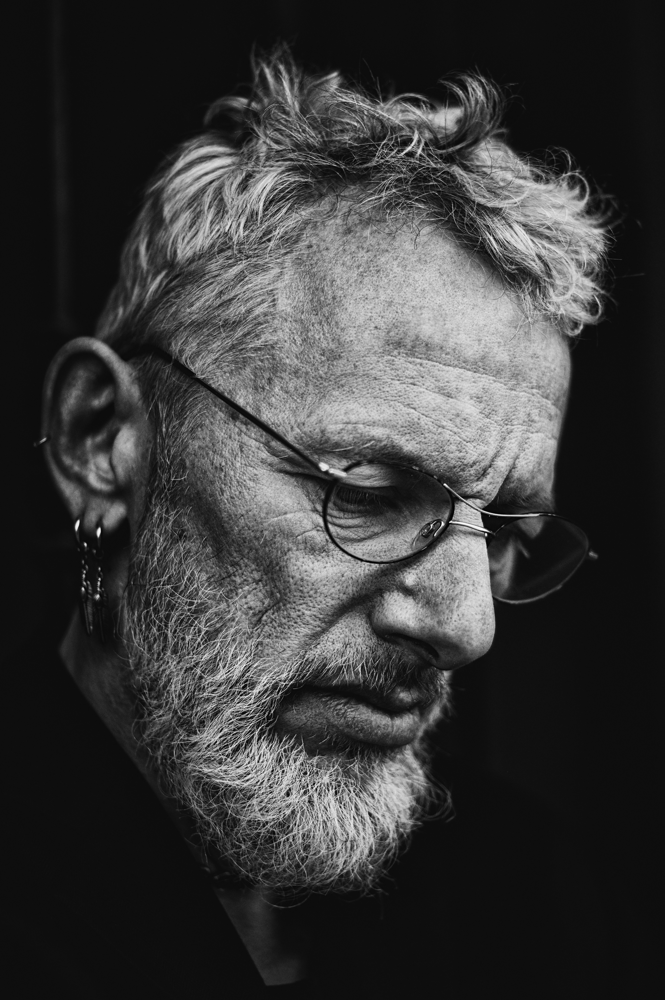

Elena
Elena is the Lead Front-End Developer at Hot Beans, with over years of experience in building responsive and accessible web interfaces. She excels in HTML, CSS, and JavaScript, and has a keen eye for design and user experience. Elena is known for turning complex designs into smooth, user-friendly websites. She's also a mentor to junior developers, helping them improve their coding standards and design thinking.

Bob
Bob is the Lead Back-End Developer at Hot Beans, with over 10 years of experience in designing and building scalable, efficient server-side applications. Specializing in technologies like Node.js, Python, and PHP, Bob is known for his expertise in creating robust APIs and optimizing databases for performance and reliability. He plays a critical role in ensuring that all systems communicate smoothly, with an eye on data security and efficient data management.

James
James is an innovative Front-End Developer at Hot Beans, specializing in creating dynamic and user-friendly interfaces. With several years of experience in HTML, CSS, JavaScript, and React, James is passionate about turning complex user requirements into intuitive and engaging web applications. He is known for his attention to detail and his ability to create responsive designs that work seamlessly across all devices. James also plays a key role in collaborating with the design team to ensure that visual aesthetics align perfectly with user functionality. Beyond coding, James enjoys mentoring junior developers and sharing best practices in web development.

Luce
Luce is the dedicated Project Manager at Hot Beans, bringing over 8 years of experience in managing digital projects from concept to delivery. With a background in both tech and design, Luce ensures that the team stays on track and that each project meets its goals and deadlines. Her organizational skills are second to none, and she excels in coordinating cross-functional teams to achieve client satisfaction. Whether it's managing timelines, budgets, or client relationships, Luce always finds innovative solutions to overcome challenges and keep projects running smoothly. Known for her excellent communication and problem-solving skills, she plays a crucial role in making sure everything from planning to deployment goes as planned.

Mark
Mark is the creative force behind the user interfaces at Hot Beans. As a UI/UX Designer, he is responsibe for crfting intuitive, visually engaging, and user-centered designs that make digital expriences smooth and enjoyable. With a strong background in graphic deign and user research, Mark brings both aesthetics and functionality to the table, ensuring that every website and application is not only beautiful but also easy to navigate. He works closely with developers and project manaers to ensure design consistency across all platforms, always focusing on how users interact with dgital products. Mark's attention to detail and passion for creating flawless desins make him a key player in delivering exeptional user experiences.